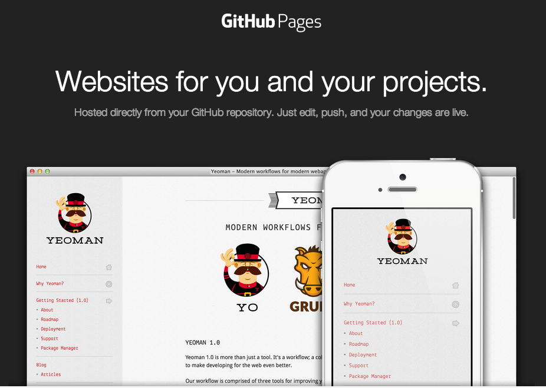
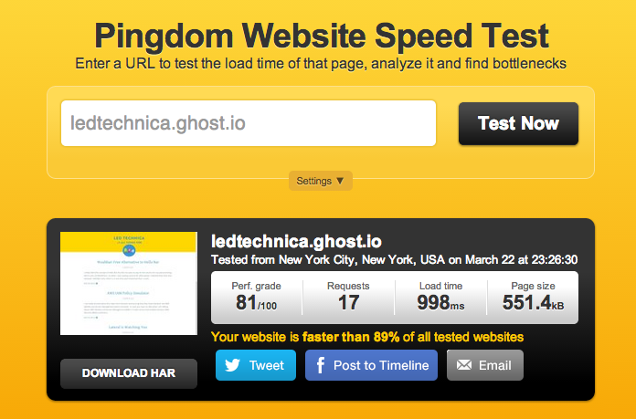
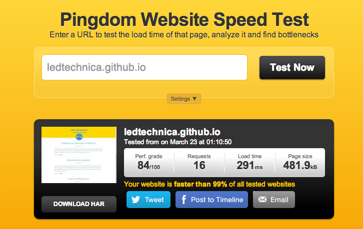

I am one of those people whom being called a geek is a compliment. I have been using WordPress for a long time now and while it has many great features and themes, I always found it to be too complicated for running a simple blog. So imagine my excitement when I heard about the Ghost blogging platform being released.
Awesome folks at Ghost made it really easy to use and deploy and even have installers for some cloud providers such as Digital Ocean. I have initially deployed a blog using the Digital Ocean installer to play around but creating and managing a dedicated droplet for this purpose also seemed like an overkill.
So once Ghost started offering hosted blogs I immediately signed up and started moving LED Technica over there. While it has been relatively easy to use, managing my custom theme became a little hassle. For example, just to add some CSS I had to repackage the theme in a zip file and upload it to the Ghost hosted platform.
So when I was doing some research on options, I ran into an excellent article by Jack Pearce about how he managed to move his Ghost blog to GitHub pages, which provided him with free hosting that was also faster.
GitHub pages basically provides “websites for you and your projects, which are hosted directly from your GitHub repository”. I knew it was popular with the Jekyll crowd (which is another blogging platform especially favored by Ruby on Rails developers) but I did not think it would help me with Ghost hosting as GitHub Pages can only host static content.

Jack Pearce in his article mentioned of a tool called Buster which is a “brute force static site generator for Ghost”. And voilà, suddenly a world of possibilities opened up for hosting LED Technica on GitHub Pages.
Below are the speed test results between Ghost Hosted Platform and the GitHub Pages:
Ghost Hosted Platform

GitHub Pages

While I did not experience the same load time gains as Jack Pearce (moving from 1.6s to 330ms) there was still some significant improvements.
His article provides some instructions with links to additional resources but I ended up having to bounce a little bit so I decided to summarized below the steps I followed (I am on a Mac):
Install Buster
pip install buster(to install buster)brew install wget(required by buster)
Setup Ghost locally
- Download Ghost
- Unzip and go to the directory
npm installnpm startto run Ghost locally- Visit http://127.0.0.1:2368/ghost to create an admin account and setup Ghost locally
- I then loaded my custom theme to content/themes subfolder in the Ghost installation (you need to restart Ghost locally to see the new theme under the settings)
- Create your articles and make changes to the theme as needed and test everything locally
Create GitHub Pages repo & set up Buster
- Go to your GitHub account and create a public repo named accountname.github.io (in my case it was ledtechnica.github.io)
- I switched to a different folder from the Ghost installation to keep the generated static files separately
- From the selected folder run
buster setupand enter the repo address you just created when prompted (e.g. https://github.com/ledtechnica/ledtechnica.github.io.git) - Once this is done, run
buster generate --domain=http://127.0.0.1:2368which will generate all the needed files under the static subfolder created in the previous step. cd staticto switch into static subfolder,git add -alland thengit commit -m 'Initial commit'followed by agit pushto upload your repo to GitHub.- GitHub Pages indicate that you might need to wait for up to 10 minutes to see your repo but in my case it took around 20 minutes. So if you are the impatient type like me, you might need to do a bunch of refreshes to finally see your blog.
Custom Domain
- Create a file named CNAME in the static folder and include your custom domain name in it - e.g. ledtechnica.com
- Commit and push the changes to GitHub and don't forget to update your DNS records.
- Please note it also takes some time for the GitHub Pages to show your site under the custom domain name.
While I agree it is not for the faint-hearted, I really enjoy gaining back the ability to modify and test all my changes locally for the theme. Furthermore, I can write my blog posts on my laptop without an Internet connection and just generate the site with Buster and push it to GitHub.